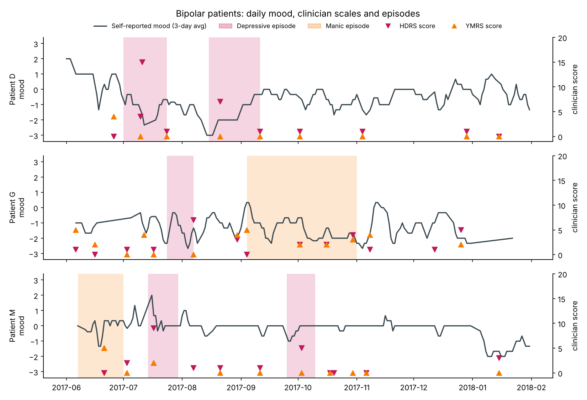

Depression leaves a trace in how a day moves.
A wrist actigraph counts movement every minute. A 1-D convolutional neural network, built from scratch, reads one day of those counts and recognises a depressive episode in people it has never seen, with 71% accuracy and 73% of bipolar patients' days flagged.
Each row is one day, midnight to midnight; darker means more movement. These two recordings are from the Depresjon dataset, and the scores are the model's average over all days.
Score a recording
Pick an example or upload your own minute-by-minute activity file. The network scores every complete 24-hour day, then averages the days. Nothing is uploaded anywhere: the model runs on this page.
The CNN beats every classic algorithm on unseen people
Each model was always tested on participants it never saw in training, which is how it would meet a new patient. Splitting days at random instead lets a model recognise the person rather than the illness and inflates accuracy to around 99%.
Balanced accuracy by model
Mean of 5 repeats of 5-fold cross-validation grouped by participant. Dotted line = chance.
More days, better answers
Share of participants classified correctly when the CNN's scores are averaged over their first 1–7 days.
Spotting an episode works; seeing it coming does not, yet
A second CNN read 14 days of each patient's daily questionnaire (mood, motivation, anxiety, sleep, caffeine and more) from the Bip4cast clinical records, and was checked against the psychiatrists' episode dates and YMRS and HDRS ratings.
Self-reports agree with doctors
Lower self-rated mood over the past week went with higher HDRS depression scores (p = 0.0003, 41 ratings).
Current episodes are detectable
The CNN recognised an ongoing depressive episode in a patient it had never seen, best of all models.
7-day forecasts fail
With 5 episodes across 3 patients, no model learned what the run-up to an episode looks like.
| Model | Detect today · known patients | Detect today · new patient | Forecast +7 days · known | Forecast +7 days · new |
|---|
ROC AUC; 0.5 is chance. Known patients = blocked time-series cross-validation with a 21-day buffer; new patient = leave-one-patient-out.

Daily mood (line), clinician-dated depressive (pink) and manic (orange) episodes, and HDRS and YMRS ratings for the three patients.
From minute counts to a score
Cut into days
1,440 one-minute counts per calendar day; partial days are dropped.
Compress
log(1 + count), averaged into 288 five-minute bins and standardised.
Convolve
Three Conv1D layers (16, 32, 32 filters; kernels 9, 5, 3) with ReLU and max-pooling learn rhythm patterns.
Pool and score
Global average pooling, dropout and one sigmoid unit give P(depressive pattern) for the day.
Average
Day scores are averaged per person; more days give a steadier answer.
Both networks are written in plain NumPy, with every gradient checked numerically, so each step can be explained. This page runs the same trained weights in JavaScript; its scores match the Python model to within 0.0002.